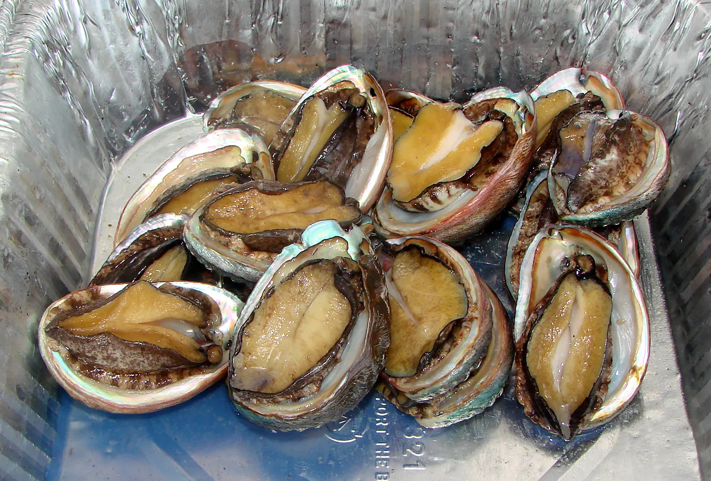

Classification of Mushrooms: Edible or Poisonous (Python)

This project develops machine learning models for accurately classifying mushrooms as edible or poisonous using a dataset of 3000+ images. Address challenges in mushroom identification and provide valuable tools for mushroom enthusiasts and field scientists.
Impacts of Vaccination Policy on COVID-19 Cases (R)

In this project, we assess the impact of government vaccination policies on Covid-19 spread across countries. Analyze time series data, including infection rates, testing rates, and vaccination policies. Build accurate ARIMAX models to understand policy effectiveness and inform decision-making. Discuss limitations and future considerations for analysis.
Abalone Age Prediction Using Three Comparable Models (Python, R)

This project utilizes physical measurements instead of time-consuming methods, exploring multiple regression techniques to estimate abalone age. With a dataset of 4177 observations and 9 variables, including the response variable "Rings," we address challenges like high correlation and multicollinearity. Our goal is to provide an efficient and accurate approach to age estimation, transforming the abalone industry.
Wheat Classification: Exploring Varietal Characteristics and Relationships (Python)
This research project analyzes and classifies Kama, Rosa, and Canadian wheat based on kernel features. Utilizing visualization, correlation analysis, and classification techniques, we uncover distinct characteristics and establish feature relationships. Applying methods like LOOCV and random forest grid search, we provide valuable insights into wheat differentiation and classification.
Visualizing COVID-19 Impact: A Real-Time Data Dashboard (R Shiny)

This project utilizes the power of Shiny and Plotly in R to develop an interactive, real-time dashboard visualizing the COVID-19 impact worldwide. Using the covid19api, the dashboard provides information on daily cases, deaths, and recoveries per country, including an all-encompassing global overview, thus serving as a comprehensive tool for COVID-19 data analysis and insights.
Unveiling Information Cascades (R)

This research project explores how participants' reliance on public predictions can override their own private information in decision-making. Through an experiment involving sequential predictions and payoff incentives, the study investigates information cascades and their impact on rational decision making. The findings shed light on herding behavior and have implications for various domains such as investments, marketing, and voting.